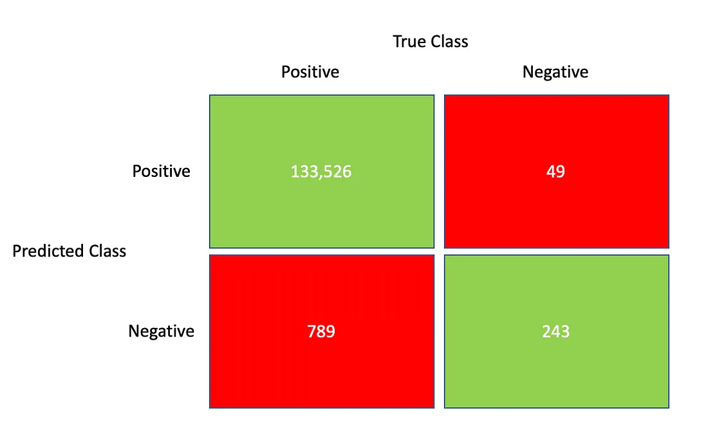

txt = """Blandit aliquam etiam erat velit scelerisque.
Fusce id velit ut tortor pretium.
Cursus turpis massa tincidunt dui ut ornare lectus.
Fermentum odio eu feugiat pretium nibh ipsum.
Urna porttitor rhoncus dolor purus non enim praesent elementum facilisis.
Ipsum faucibus vitae aliquet nec ullamcorper sit amet risus nullam."""Final Exam Part I
Data-Based Economics
- First Name: …
- Last Name: …
- Student ID: …
This part is meant to last about one hour. It must be sent through the usual Nuvolos mechanism by 12pm. Don’t worry if it is not finished.
You are free to use any online resource. The symbol 🔍 indicates that a google search might help you if you are stuck.
It is however strictly forbidden to communicate with other students.
In answering the questions below, don’t hesitate to comment abundantly your code, to reflect on what you are doing and take initiatives when you deem it relevant.
Happy coding ! 💪
Exercise 1:
Consider the following text:
Print the string
#Programmatically count the number of occurences of word ipsum (🔍)
#(Bonus) Programmatically count the number of words in the string.
#Exercise 2: Confusion Matrix
The following matrix, shows a confusion matrix resulting from the evaluation of a credit card fraud detection algorithm (Positive=Fraud).

Compute the following statistics (🔍)
- False Positive Rate?
- False Negative Rate?
- Accuracy?
How would you assess the quality of the said algorithm?
# fpr = # fnr = # accuracy = Exercise 3: Gold and Silver
Download the goldsilver.csv file.
Import the goldsilver.csv file as a dataframe. It contains several simultaneous quotes for the prices of gold and silver. Show the first few observations. What are the column names?
# some useful imports
import pandas as pd
from matplotlib import pyplot as plt# df = # Make a scatterplot (🔍 matplotlib) with the price of silver as a function of the price of gold.
#Compute the actual correlation between the two series.
#Exercise 4: Do guns reduce crime
General context
Some american states have specific so-called “shall carry” laws which facilitates the obtention of a carrying permit. Supporters of the laws argue that weopons carried and concealed by regular citizens act as a deterrent for crime.
From a european perspective, it sounds like a dangerous fantasy.
However, the data is not so clearcut and early studies have mostly supported the deterring hypothesis. From the bestseller More guns less crime, to more recent academic studies (Shooting Down the ‘More Guns Less Crime’ Hypothesis. or the latest studies by the Rand Corporation), the academic debate is still lively, although it seems to be slowly settling against guns.
The goal here is to make a first preliminary regression, to enter the debate…
Importing and describing the data
Import the Guns dataset from the AER package in R-Dataset library.
import statsmodels
import statsmodels.datasets
dataset = statsmodels.datasets.get_rdataset("Guns", package="AER")# import dataframe
df = dataset['data']Print the documentation from the package (hint: check dataset.keys())
# How many observations are there? How many dates? How many states?
#Describe the data by making for each column a short description of what the data represents and how it is coded.
#Compute the correlation matrix and comment on a few pairs of variables (2 or 3) that are highly correlated. Bonus: make a graphical representation of the correlation matrix.
#Regression Analysis
Perform a simple one dimensional regression, explaining the violent crime rate by the presence of a shall-carry law. Comment on the results.
import statsmodels.formula.api as sm
from numpy import log # needed if you use log in formulas# reminder of the API
model = sm.ols(formula="your_formula_goes_there", data=df)
result = model.fit()
result.summary()#Augment the regression with all relevant factors present in the table (excluding “Year” and “Country”). Comment on the results (including significance and signs of various regressors).
#What is the percentage increase in violent crimes associated to a 1% increase in income?
#Run the same regression as before to explain murder rate and robbery rate. What kind of crime is most affected by the shall carry law?
#Other comments?
#